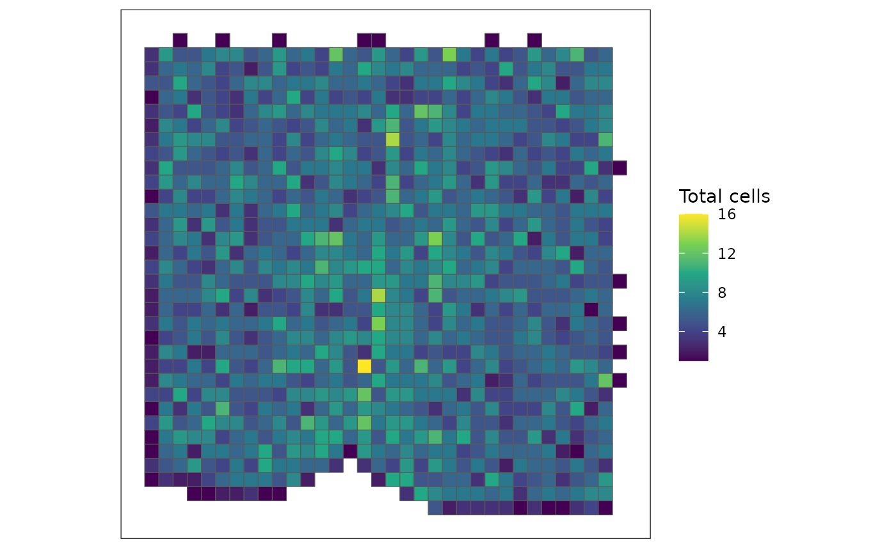
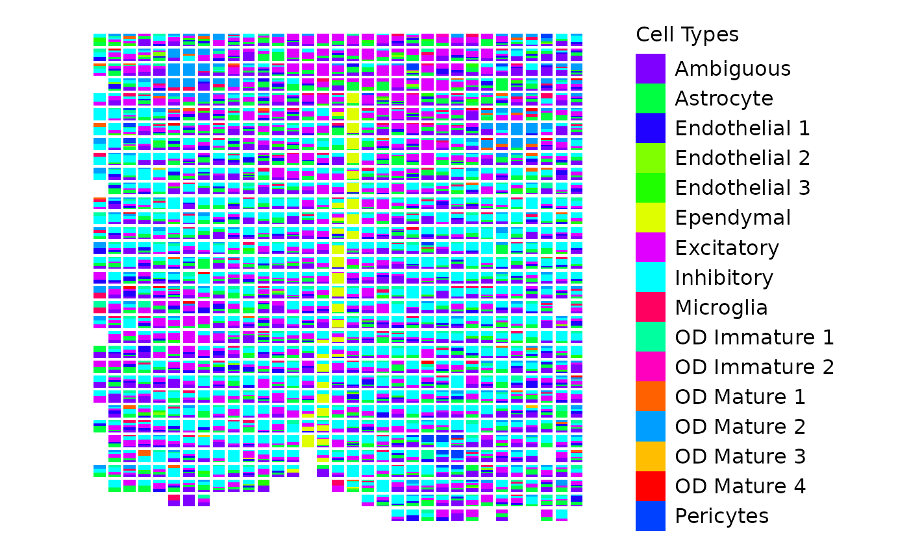

Using scatterbar with a SpatialExperiment object
Dee Velazquez and Jean Fan
2024-11-26
Source:vignettes/using-scatterbar-with-spatial-experiment.Rmd
using-scatterbar-with-spatial-experiment.RmdUsing scatterbar with a SpatialExperiment
object
This tutorial demonstrates how to visualize cell-type proportions
with scatterbar from a SpatialExperiment
object. SpatialExperiment is a class from Bioconductor that
stores information from spatial-omics experiments, which we can use to
visualize the cell types found in certain spots. We will use
SEraster to rasterize cell-type counts and calculate their
proportions within pixels, when can then be utilized by
scatterbar.
For more information on SpatialExperiment, click [here]
(https://www.bioconductor.org/packages/release/bioc/vignettes/SpatialExperiment/inst/doc/SpatialExperiment.html).
Load libraries
First, we need to loading the necessary libraries and load in the
dataset provided by SEraster. It is a preprocessed MERFISH
dataset of the mouse preoptic area (POA) from a female naive animal. For
more information, please refer to the original work, Moffitt J.
and Bambah-Mukku D. et al. (2018), “Molecular, spatial, and functional
single-cell profiling of the hypothalamic preoptic region”, Science
Advances.
# Load required libraries
library(SpatialExperiment)
#> Loading required package: SingleCellExperiment
#> Loading required package: SummarizedExperiment
#> Loading required package: MatrixGenerics
#> Loading required package: matrixStats
#>
#> Attaching package: 'MatrixGenerics'
#> The following objects are masked from 'package:matrixStats':
#>
#> colAlls, colAnyNAs, colAnys, colAvgsPerRowSet, colCollapse,
#> colCounts, colCummaxs, colCummins, colCumprods, colCumsums,
#> colDiffs, colIQRDiffs, colIQRs, colLogSumExps, colMadDiffs,
#> colMads, colMaxs, colMeans2, colMedians, colMins, colOrderStats,
#> colProds, colQuantiles, colRanges, colRanks, colSdDiffs, colSds,
#> colSums2, colTabulates, colVarDiffs, colVars, colWeightedMads,
#> colWeightedMeans, colWeightedMedians, colWeightedSds,
#> colWeightedVars, rowAlls, rowAnyNAs, rowAnys, rowAvgsPerColSet,
#> rowCollapse, rowCounts, rowCummaxs, rowCummins, rowCumprods,
#> rowCumsums, rowDiffs, rowIQRDiffs, rowIQRs, rowLogSumExps,
#> rowMadDiffs, rowMads, rowMaxs, rowMeans2, rowMedians, rowMins,
#> rowOrderStats, rowProds, rowQuantiles, rowRanges, rowRanks,
#> rowSdDiffs, rowSds, rowSums2, rowTabulates, rowVarDiffs, rowVars,
#> rowWeightedMads, rowWeightedMeans, rowWeightedMedians,
#> rowWeightedSds, rowWeightedVars
#> Loading required package: GenomicRanges
#> Loading required package: stats4
#> Loading required package: BiocGenerics
#>
#> Attaching package: 'BiocGenerics'
#> The following objects are masked from 'package:stats':
#>
#> IQR, mad, sd, var, xtabs
#> The following objects are masked from 'package:base':
#>
#> anyDuplicated, aperm, append, as.data.frame, basename, cbind,
#> colnames, dirname, do.call, duplicated, eval, evalq, Filter, Find,
#> get, grep, grepl, intersect, is.unsorted, lapply, Map, mapply,
#> match, mget, order, paste, pmax, pmax.int, pmin, pmin.int,
#> Position, rank, rbind, Reduce, rownames, sapply, saveRDS, setdiff,
#> table, tapply, union, unique, unsplit, which.max, which.min
#> Loading required package: S4Vectors
#>
#> Attaching package: 'S4Vectors'
#> The following object is masked from 'package:utils':
#>
#> findMatches
#> The following objects are masked from 'package:base':
#>
#> expand.grid, I, unname
#> Loading required package: IRanges
#> Loading required package: GenomeInfoDb
#> Loading required package: Biobase
#> Welcome to Bioconductor
#>
#> Vignettes contain introductory material; view with
#> 'browseVignettes()'. To cite Bioconductor, see
#> 'citation("Biobase")', and for packages 'citation("pkgname")'.
#>
#> Attaching package: 'Biobase'
#> The following object is masked from 'package:MatrixGenerics':
#>
#> rowMedians
#> The following objects are masked from 'package:matrixStats':
#>
#> anyMissing, rowMedians
#> Warning: replacing previous import 'S4Arrays::makeNindexFromArrayViewport' by
#> 'DelayedArray::makeNindexFromArrayViewport' when loading 'SummarizedExperiment'
library(SEraster)
library(scatterbar)
library(ggplot2)
# Load the MERFISH dataset from mouse POA (Preoptic Area)
data("merfish_mousePOA")We can see that this data is in the form of a
SpatialExperiment.
# Check the class of the dataset
class(merfish_mousePOA)
#> [1] "SpatialExperiment"
#> attr(,"package")
#> [1] "SpatialExperiment"Rasterize Cell-Type Counts
To aggregate cell-type data into spatial pixels, we use the
rasterizeCellType function from SEraster. This
function takes the SpatialExperiment object and generates a
rasterized view of cell-type counts. We will rasterize at a resolution
of 55 micrometers (µm) and use the “sum” function to aggregate the
number of cells.
# Rasterize the cell-type data at 55um resolution
rastCt <- SEraster::rasterizeCellType(
merfish_mousePOA, # SpatialExperiment object
col_name = "celltype", # Column with cell-type information
resolution = 55, # Set resolution to 55 micrometers
fun = "sum", # Sum up the cells within each pixel
square = TRUE # Use square-shaped pixels for rasterization
)
# Visualize the rasterized result (total number of cells per pixel)
SEraster::plotRaster(rastCt, name = "Total cells")
Calculate Cell-Type Proportions
Next, we calculate the proportions of each cell type within each pixel. We first retrieve the list of cell IDs for each pixel and the corresponding cell types. We then calculate the proportions for each cell type by dividing the number of cells of a given type by the total number of cells in each pixel.
# Extract the list of cell IDs for each pixel
cellids_perpixel <- colData(rastCt)$cellID_list
# Retrieve the cell-type information
ct <- merfish_mousePOA$celltype
names(ct) <- colnames(merfish_mousePOA)
ct <- as.factor(ct) # Ensure cell types are factors
# Calculate proportions for each pixel
prop <- do.call(rbind, lapply(cellids_perpixel, function(x) {
table(ct[x]) / length(x)
}))
# Set rownames to match the pixel IDs in the raster object
rownames(prop) <- rownames(colData(rastCt))
head(prop) # Display the first few rows of the proportions matrix
#> Ambiguous Astrocyte Endothelial 1 Endothelial 2 Endothelial 3 Ependymal
#> pixel21 0.2000000 0.0000000 0.0000000 0 0 0
#> pixel22 0.0000000 0.0000000 0.5000000 0 0 0
#> pixel23 0.0000000 0.3333333 0.0000000 0 0 0
#> pixel24 0.0000000 0.0000000 0.3333333 0 0 0
#> pixel25 0.6666667 0.0000000 0.0000000 0 0 0
#> pixel26 0.0000000 0.3333333 0.0000000 0 0 0
#> Excitatory Inhibitory Microglia OD Immature 1 OD Immature 2 OD Mature 1
#> pixel21 0.2000000 0.6000000 0 0.0000000 0 0
#> pixel22 0.0000000 0.5000000 0 0.0000000 0 0
#> pixel23 0.0000000 0.3333333 0 0.3333333 0 0
#> pixel24 0.6666667 0.0000000 0 0.0000000 0 0
#> pixel25 0.3333333 0.0000000 0 0.0000000 0 0
#> pixel26 0.6666667 0.0000000 0 0.0000000 0 0
#> OD Mature 2 OD Mature 3 OD Mature 4 Pericytes
#> pixel21 0 0 0 0
#> pixel22 0 0 0 0
#> pixel23 0 0 0 0
#> pixel24 0 0 0 0
#> pixel25 0 0 0 0
#> pixel26 0 0 0 0Retrieve Pixel Coordinates
For scatterbar, we also need the x and y coordinates of
the pixels from the rastCt object. These spatial
coordinates correspond to the positions of each pixel in the rasterized
grid.
# Extract the spatial coordinates of the pixels (x, y)
pos <- spatialCoords(rastCt)
head(pos) # Display the first few rows of the spatial coordinates
#> x y
#> pixel21 1099.5 -0.5
#> pixel22 1154.5 -0.5
#> pixel23 1209.5 -0.5
#> pixel24 1264.5 -0.5
#> pixel25 1319.5 -0.5
#> pixel26 1374.5 -0.5Filter Pixels with More than One Cell
We only want to visualize pixels that contain more than one cell, so we filter out pixels that do not meet this criterion.
# Filter for pixels that only contain more than one cell for visualization
vi <- colData(rastCt)$num_cell > 1
pos <- pos[vi, ] # Filter spatial coordinates
prop <- prop[vi, ] # Filter proportions matrix
# Check dimensions to ensure filtering was successful
dim(pos)
#> [1] 1035 2
dim(prop)
#> [1] 1035 16Visualize Cell-Type Proportions Using scatterbar
Now that we have both the cell-type proportions and pixel position
coordinates, we can visualize the data using scatterbar. We
pass the proportions and coordinates, along with custom colors, to
create a scatterbar plot. Remember that both the
proportions and position data must be data frames in order to be passed
into scatterbar.
# Generate custom colors for the cell types
custom_colors <- sample(rainbow(length(levels(ct))))
# Visualize the cell-type proportions using scatterbar
start.time <- Sys.time()
scatterbar::scatterbar(
prop, # Proportions matrix
data.frame(pos), # Spatial coordinates
colors = custom_colors, # Custom colors for each cell type
padding_x = 10, # Add padding to the x-axis
padding_y = 10, # Add padding to the y-axis
legend_title = "Cell Types" # Legend title
) + coord_fixed() # Maintain aspect ratio
#> Calculated size_x: 44.7069487500984
#> Calculated size_y: 44.7069487500984
#> Applied padding_x: 10
#> Applied padding_y: 10
This plot shows the proportion of each cell type within each pixel, with bars stacked to represent the composition of cell types. The colors correspond to different cell types, as defined by the custom color vector.